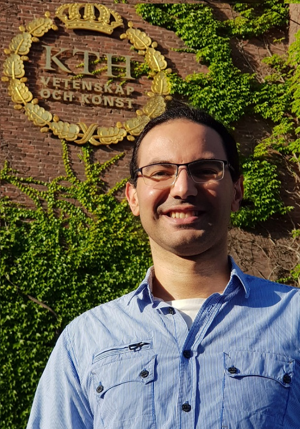

Diffusion-based learning
Repurposing the denoising process for fast, interpretable semantic segmentation and change detection—without expensive iterative sampling.
Diffusion modelsDense prediction
Doctoral researcher · KTH Stockholm
I develop robust AI systems that turn satellite imagery into actionable understanding—especially for wildfire monitoring, change detection, and disaster assessment.

Current focus
Generalizable GeoAI
01 / Research
Real-world Earth observation comes with new regions, new seasons, and new sensors. My research asks how models can remain reliable when the world changes around them.
Repurposing the denoising process for fast, interpretable semantic segmentation and change detection—without expensive iterative sampling.
Adapting large pretrained models efficiently with frozen encoders, diffusion decoders, and low-rank updates.
Mapping burned areas and assessing building damage across geographic, temporal, and spatial-resolution shifts.
02 / Selected work
Journal article · Open source
A unified model that turns diffusion into a single-pass discriminative framework. It ranked first across three remote-sensing benchmarks while running 13.5× faster than the closest diffusion baseline.
Conference paper
Efficient adaptation across 3,820 wildfire events in the United States and Canada.
KTH Royal Institute of Technology
Three studies on robust, generalizable AI for semantic mapping, change detection, and wildfire monitoring.
Conference paper
Cross-resolution disaster assessment on real-world wildfires in Hawaii and Greece.
03 / Journey
My path spans academic research, production machine learning, telecom, and teaching.
KTH · Geoinformatics
Developing generalizable machine learning methods for Earth observation under Professors Yifang Ban and Andrea Nascetti. Completed a licentiate degree in 2026.
Ericsson Global AI Accelerator
Built machine learning and generative AI solutions for cellular networks, including forecasting, graph learning, computer vision, and retrieval-augmented language models. Filed five patent applications.
KTH Royal Institute of Technology
Combined advanced machine learning studies with research engineering, teaching, mentorship, and two placements at Ericsson.
American University of Beirut
A dual foundation in engineering and pure mathematics—the combination that continues to shape how I approach machine learning.
04 / Selected projects
05 / Beyond the lab
When I’m not working with satellite data, you’ll usually find me playing the violin, hiking, cycling, skating, or following football. The best ideas often arrive away from the screen.